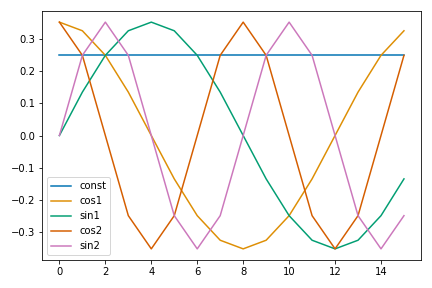
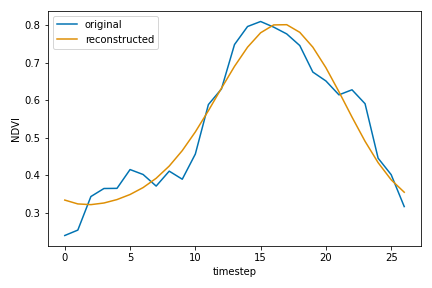
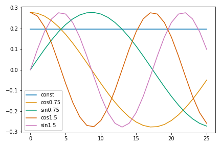
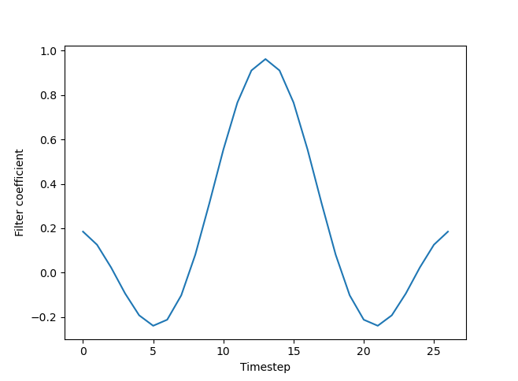
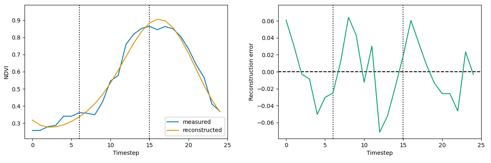
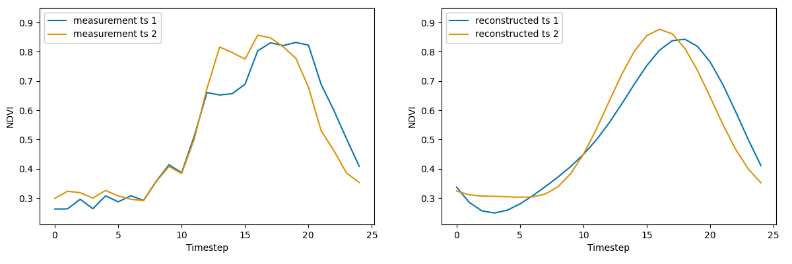

The purpose of this page is to explain and demonstrate what the Discrete Fourier Transform (DFT) is doing "under the hood" when applied to remotely sensed intra-annual time series. The main intended audience is remote sensing researchers who work with environmental time series data. However, researchers in other domains may also find it instructive (colleagues in other fields have told me it enhanced their understanding of the DFT). Remote sensing domain-specific content is limited to the running example of Normalized Difference Vegetation Index (NDVI) time series as proxy for vegetation development.
The motivation for this analysis is that intra-annual environmental time series are structurally different from the data to which the DFT is commonly applied in other fields. In signal processing, dynamical systems, or time series analysis more generally, the DFT is often used to process and analyze periodic data. Even if the data is not strictly periodic, often there is at least some notion of "cycles" and a given data sample will contain many complete cycles. In many intra-annual environmental time series, there will be only a single "cycle". For example, measurements of agricultural field containing a crop with a single growing season and harvest will complete one cycle per year. Even when there is more than one cycle, for example in the tropics or a crop with multiple harvests, the number of cycles will still be small and the duration of each cycle will not necessarily be equal.
This oberservation does not, in itself, imply that the DFT cannot or should not be applied to intra-annual environmental time series. After all:
"One can Fourier transform anything — often meaningfully."
- John Tukey
The issue is not that the DFT will necessarily distort the data. For example, application of a rank \(n\) forward then inverse DFT will exactly reconstruct a time series of length \(n\), regardless of periodicty. Rather, the issue is that the way the DFT is often used in remote sensing applications relies on the assumption that the data can be approximated by a low-dimensional DFT-based representation without significant loss of information. This page will explore what can happen when this assumption does not hold in practice.
An important takeaway from this page will be an understanding of how the behavior of the DFT, applied to intra-annual time series, is determined by the particular frequency terms selected for the transformation. Put another way, it will become clear that there is not a canonical set of frequencies suited to the analysis of intra-annual environmental time series. (This is different from other techincal domains, where "the DFT" often refers to a set of consecutive integer frequencies up to some cutoff.) In practice, this means that the DFT should not be thought of as a generic data transformation in environmental remote sensing. Rather, its use should be informed by application-specific data. Failing to account for this fact can introduce bias and other distortions of the data across a range of applications.
The presentation of material assumes familiarity with concepts from linear algebra like basis, orthogonality, and projection. Example Python code is given to demonstrate various points, but understanding the code line-by-line is not required for understanding the high level concepts. The purpose of the code is to numerically verify some important properties of the DFT, rather than formally proving them.
Some specific goals of this page are the following:
While this page focuses primarily on the limitations of the DFT applied to intra-annual time series, the purpose is not to claim that the DFT should never be used in this context. There are valid reasons why someone may want to use the DFT including its ease of use, interpretability, and the availability of very efficient implementations based on the Fast Fourier Transform. Practitioners should be aware of the issues raised here to avoid potential pitfalls. There are many alternatives to the DFT, and they are too numerous and varied to discuss in generality. However, I will briefly highlight connections with one other method, and then return to the question of alternatives in the conclusion.
The motivation for creating this page came from working on the paper "Fisher Discriminant Analysis for Extracting Interpretable Phenological Information from Multivariate Time Series Data" [link to preprint]. Fisher Discriminant Analysis (FDA) is a method of computing a linear transformation that maximally separates dissimilar data in the transformed space. As the paper explains, you can construct scenarios where the DFT is optimal with respect to the FDA criterion. However, these scenarios are unlikely to arise in real remotely sensed measurement time series. Neither the FDA paper nor this page claim to offer a comprehensive theory of how to approach the analysis of intra-annual time series. However, they do take steps toward developing a mathematical framework for analyzing some of most widely studied objects in environmental remote sensing.
The DFT is widely used in enviornmental remote sensing to process and analyze time series data. Despite its ubiquity, there has been relatively little written about the mathematical properties of the DFT with respect to the particular kind of time series data that arise in environmental remote sensing. Many studies employ the DFT, or related methods, with little or no justification. Other studies dismiss it out of hand as inappropriate on the grounds that intra-annual environmental time series are not stationary. While the latter camp may be technically correct, it's also oversimplifying a subtle and at times messy issue. After all, many of the studies that have used the DFT for data smoothing, dimensionality reduction, and information extraction have attained (and published) good results across a range of applications. Even where the DFT isn't technically "the best tool for the job," decades of environmental remote sensing literature suggest that it is a tool that can often get the job done.
This web page will focus on two uses of the DFT that are common in environmental remote sensing: data smoothing and information extraction. The DFT, and related methods such as the Discrete Cosine Transform, are widely used for time series smoothing (Roerink et al. 2000, Moody and Johnson 2001, Hermance 2007, Dash et al. 2010, Guan et al. 2014, Urban et al. 2018, [add more]). Often the DFT is used to construct a low pass filter, which gets applied as a preprocessing step prior to curve fitting or another method that assumes the data will have a particular shape. The DFT is also used for information extraction (Jakubauskas et al. 2002, Wagenseil et al. 2006, Wang et al. 2019, [add more]). The logic of this use case is that a low-dimensional representation of the time series in the frequence domain encodes useful information about some aspect of the land surface. While there are a wide range of methods used for both of these tasks (see Zeng et al. 2020 for comprehensive review), it is worth examining the DFT due to its ubiquity and importance across a wide range of disciplines. Even where it is noted that the DFT may not be well-suited to analysis of remotely sensed time series (Martinez and Gilabert 2009, [add more]), there has been relatively little technical exposition of the underlying mechanisms that determine how the DFT behaves when used to smooth or extract information from intra-annual environmental time series.
This page attempts to be precise but accessible in explaining what the DFT is and what its limitations are in the context of intra-annual environmental time series. The information presented here can help readers decide whether and how the DFT can be effectively applied to their research problem.
There are various equivalent formulations of the DFT. We will consider the version expressed as a sum of cosine and sine functions with real-valued coefficients. This formulation is common in remote sensing literature and is closely related to a method called harmonic regression (HR). The "full" DFT decomposes a real-valued time series \(x(t)\), \(t = 1, \ldots , n\) (for simplicity assume \(n\) is even), into frequency components that complete some integer number \(k\) cycles per period.
$$x(t) = a + \sum_{k=1}^{n/2-1} \left[ b_k \cos(2 \pi kt) + c_k \sin(2 \pi kt) \right] + d \cos \left(2 \pi \frac{n}{2} t \right) $$
The constant \(a\) can be thought of as the "zero frequency" or the mean value of the time series. In standard formulations of the DFT, \(k\) takes only integer values. That is, each frequency component makes an integer number of complete cycles. The DFT is a projection onto a set of vectors corresponding to sinusoids of varying frequency. In practice, one will often want to use only a subset of the possible frequencies such that \( k <e n/2 \). We can compute the vectors for a given set of frequencies using a function like the following:
import numpy as np
import pandas as pd
def make_hr_basis_funcs(n, freqs):
basis_df = pd.DataFrame(data=np.arange(n)/n*(2*np.pi), columns=['ts'])
basis_df['const'] = 1/np.sqrt(n)
for freq in freqs:
basis_df[f'cos{freq}'] = np.cos(freq*basis_df.ts)/np.sqrt(n)*np.sqrt(2)
basis_df[f'sin{freq}'] = np.sin(freq*basis_df.ts)/np.sqrt(n)*np.sqrt(2)
if freq == n//2-1 and n%2 == 0:
basis_df[f'cos{freq+1}'] = np.cos((freq+1)*basis_df.ts)/np.sqrt(n)
return basis_df
For example, when \( n = 16 \) the vectors corresponding to frequencies that complete 0, 1, and 2 cycles look like this:
import matplotlib.pyplot as plt
basis = make_hr_basis_funcs(16, [1, 2])
for vec in basis.columns[1:]:
plt.plot(basis[vec], label=vec)

Figure 1 DFT basis vectors at integer frequencies. Note that all terms complete "full cycles" over the sample period.
Note that these basis vectors are scaled to have unit length. (Unit-length scaling is merely a convention that will simplify some future calculations.)
np.linalg.norm(basis.const) # 1.0 np.linalg.norm(basis.cos1) # 1.0 np.linalg.norm(basis.sin1) # 1.0 # ...
For integer values of \(k\), one can show analytically that DFT basis vectors are orthogonal to one another. (Note that this is not the case for non-integer \(k\), which is a topic we will return to shortly.) In addition, the sum of the cosine and sine terms for a given frequency is orthogonal to the sum of terms in any other frequency. We can also check these properties numerically.
np.allclose(np.dot(basis.cos1, basis.sin1), 0) # True # ... np.allclose(np.dot(basis.cos1+basis.sin1, basis.cos2+basis.sin2), 0) # True # ...
Therefore the DFT vectors form an orthonormal basis. Viewed this way, the DFT is simply a projection, the result of which gives the coordinates of the time series in "frequency space." Because the basis vectors have been scaled to unit length, we can easily compute the reconstruction of the time series after projection onto a given set of frequencies without additional scaling.
# load NDVI time series data
data = pd.read_csv('ndvi_planting_date.csv')
# select an example time series and format into column vector
ts = data.iloc[-1, 4:].to_numpy().reshape(-1, 1)
plt.plot(ts, label='original')
basis = make_hr_basis_funcs(len(ts), [1, 2])
# create projection matrix
dft = basis.iloc[:, 1:].to_numpy()
# project time series onto frequency vectors
# gives 5x1 vector of coordinates in "frequency space"
ts_freq = dft.T@ts
# reconstruct time series in original dimension
ts_recon = dft@ts_freq
plt.plot(ts_recon, label='reconstructed')

Figure 2 NDVI time series and a low rank reconstruction using a DFT-based projection.
Note that the reconstructed time series does not exactly match the original because information is lost when projecting into a lower dimension (in this case, onto only two frequency modes plus a constant). Using more frequency terms will produce a more accurate reconstruction. In fact, if we use the "full" DFT with \(n/2\) frequency terms for a time series with even length (\( n/2 - 1 \) for odd), then it is an \(n\)-dimensional orthonormal transformation (i.e. an isomorphism) and the time series will be reconstructed exactly. We can verify this property numerically.
basis = make_hr_basis_funcs(len(ts), list(range(1, (len(ts)+1)//2))) # now DFT matrix is len(ts) x len(ts) dft = basis.iloc[:, 1:].to_numpy() ts_freq = dft.T@ts ts_recon = dft@ts_freq np.allclose(ts, ts_recon) # True
Below, we can see the how the reconstruction of an NDVI time series varies as a function of the number of frequency terms used in the DFT. At one extreme, when we use only a constant term, the "reconstruction" is simply the mean of the time series. At the other extreme, the measurements are reproduced exactly. You can also see that there are "diminishing returns" with respect to reconstruction error beyond about three frequency terms.
Interactive Figure 1 Time series reconstructions using different numbers of DFT terms. The lefthand plot shows the measurement data (black points) and reconstructions (blue lines segments). The righthand plot shows the reconstruction error as a function of number of DFT terms.
Up to this point, we have considered only frequencies that complete an integer number of cycles per period. This is, in general, necessary for orthogonality and is a standard practice in the analysis of periodic signals and other oscillatory dynamic systems. However, there are reasons why one might want to consider non-integer frequencies in an environmental remote sensing application.
Classical applications of the DFT deal with periodic signals that repeat many times over the duration of a sample. This is not the case with intra-annual environmental time series. For example, many crops and natural vegetation will complete a single "cycle" of development each year. For example, in the NDVI time series in the previous section, the observed vegetation density increases through the spring, peaks at some point in the summer, and then recedes as the plants senesce. There are cases where vegetation can complete multiple cycles per year, such as multicropping or vegetation in the tropics. However, even these cases do not exhibit the same kind of harmonic oscillation that one finds in a radio wave, for example. Even though an NDVI time series sort of "looks like" a sinusoid, it cannot be reconstructed exactly using \(k \ll n/2\) frequency terms.
In order to better represent a time series in low dimensions, it may be necessary to use non-integer frequencies. For example, the following shows a basis composed on frequency terms that complete 0.75 and 1.5 oscillations per period.
basis = make_hr_basis_funcs(len(ts), [.75, 1.5])
for vec in basis.columns[1:]:
plt.plot(basis[vec], label=vec)

Figure 3 DFT basis vectors at non-integer frequencies. Note that vectors are "mid-cycle" at the end of the sample period.
We can check that the basis frequencies are no longer orthogonal to one another.
basis['cos1.5'].sum() # 0.27216552697590934 np.dot(basis['cos1.5'], basis['cos0.75']) # -0.10551854620726792 print(np.dot(basis['cos1.5']+basis['sin1.5'], basis['cos0.75']+basis['sin0.75'])) # -0.2851111664886096
One impact of using a non-orthogonal basis is that the formulations of the DFT as a linear projection versus harmonic regression are no longer equivalent. Note that the Fourier coefficients computed by projection are not equivalent when using a non-orthogonal basis.
D = basis.iloc[:, 1:].to_numpy() res = np.linalg.lstsq(D, ts) print(res[0]) # [[ 2.16928536] # [-1.17528843] # [ 0.37834316] # [ 0.50231509] # [-0.04965974]] print(D.T@ts) # [[ 2.62504204] # [-1.7988438 ] # [ 0.74736808] # [ 0.67200561] # [ 0.15850259]]
The reason for this difference is easy to see when considering for the Ordinary Least Squares (OLS) estimator.
$$ \left(D^TD \right)^{-1}D^Tx $$
When the DFT basis is orthonormal, then \( D^TD = I\), where \( I \) is the identity matrix. In this case, the OLS estimate of harmonic regression coefficients is simply \(D^T x \), which is equivalent to the projection formulation. This also means that the harmonic regression coefficient estimates can change as a function of which other frequnecy terms are included, similar to how adding covariates to a linear regression can change the coefficient parameter estimates.
One of the common uses of the DFT in the remote sensing research is to extract information from time series (or "engineer features" in machine learning terminology). The logic underlying this approach is that the representation of the time series in the frequency domain encodes useful information. Employing this approach generally assumes that the time series can be usefully described using relatively few frequency terms. Each frequency term adds two dimensions to the frequency domain representation.
In practice, this type of method is used in two ways. The first is to take the coordinates in the frequency domain (i.e. the cosine/sine coefficient estimates in a harmonic regression) as abstract features to be passed to a machine learning model. This approach allows for using multiple frequency terms and multivariate time series, but can be less interpretable depending on the number of features and the type of machine learning model used. The second approach is to explicity compute the amplitude \(A\) and initial phase \(\varphi\) at a given frequency. For example, at frequency \(k\) these can be computed as follow.
$$ A_k = \sqrt{b_k^2 + c_k^2}$$ $$\varphi_k = \arctan \left(\frac{c_k}{b_k} \right)$$
The amplitude and initial phase may be useful for various time series labelling problems. For example, the amplitude of an NDVI time series roughy estimates the difference between the maximum and minimum vegetation density, which can be useful for distinguishing between different types of vegetation with different canopy structure. The initial phase gives information on the timing of changes in vegetation density, such as green-up or senescence.
The visualization above makes it clear that the correlation between planting date and initial phase depends strongly on the selected frequency. For example, at the frequency of 1, there is a clear relationship between planting date and initial phase. However, some of the later planting dates "go off the top" of the plot and alias back in at negative phase values. By toggling the frequency slider, you can find frequencies where initial phase appears to be a good predictor of planting date. However, there is not way to know that these frequencies will be a priori. Rather, they must be found using labelled data. In practice, one must also keep in mind that adding and removing non-orthogonal frequencies will affect the frequency domain representation of the time series when using HR.
The projection and reconstruction operations shown in Section 1 are equivalent to applying a "brick-wall" low pass filter. A low pass filter allows the low frequencies to pass through and blocks the high frequencies, which are assumed to be noise. In the frequency domain, the filter used to generate the reconstruction in Figure 2 looks like a rectangular step function with a sharp cutoff above which frequencies are removed.
From the Convolution Theorem, we know that multiplication in the frequency domain is equivalant to convolution in the time domain. It is instructive to verfiy this property numerically, although it involves more technical details than previous examples. These details are mentioned but mostly glossed over because they are not integral to the geometric intuition.
# recreate the basis used in Figure 2 basis = make_hr_basis_funcs(ts.size, [1, 2]) # construct the sinc fuction as the inverse transform of the filter # (it's easier to think about using the complex formulation of the DFT, # where the non-zero brick-wall filter coefficients are 1+0i, resulting in # the inverse transform producing a sum of only the real-valued i.e. cosine # frequency terms) # (note also the scaling of cosine terms by sqrt 2 to account for how we # originally scaled the DFT basis vectors) sinc = basis.const+(basis.cos1+basis.cos2)*np.sqrt(2) # center the sinc function # (otherwise convolution will produce a shifted version of the filtered # time series) sinc = np.fft.fftshift(sinc) # Figure 4 plt.plot(sinc)
Figure 4 Inverse transform of the brick-wall low pass filter. The projection/reconstruction is equivalent to convolution with the discretized sinc function pictured here.
The inverse transform of a continuous box-shaped step function is known as the sinc function and is given by the formula \( \sin(t)/t \). With a time-domain representation of the filter, we can now apply it using a convolution. Note that the projection/reconstruction and convolution formulations produce identical filtered time series.
# the numpy and scipy `convolve` functions do not have an option for circular # convolution, so we will simply repeat the time series three times, convolve # with the filter, and then keep the "middle" copy of the time series # (circular convolution is generally implemented via DFT, but the whole point # is we're trying to demonstrate that they're equivalent) # create "triple" repeated time series tts = np.tile(ts, 3) # convolve with filter and keep only the "middle" ts_filt = np.convolve(tts, sinc, mode='same')[ts.size:-ts.size] # scale by the square root of the filter length ts_filt = filtered_ts/np.sqrt(sinc.size) # recreate the projected/reconstructed time series from Figure 2 dft = basis.iloc[:, 1:].to_numpy() ts_freq = dft.T@ts ts_recon = dft@ts_freq # verify that the two method produce the same smoothed time series np.allclose(ts_filt, ts_recon) # True
Reframing the projection/reconstruction as a convolution makes it is easier to see how the low pass filter smooths the time series. Considering the sinc function in Figure 4 as a convolution kernel, the filtering operation computes a weighted average at each measurement in the time series. The "lobes" of the sinc function capture nearby values in the weighted average. This is why the fitler smooths the time series, but also "flattens out" sharp features. The effect is similar to blurring of an image by a low pass filter in two dimensions, as shown in Figure 5.
Figure 5 Original (left) and smoothed/blurred (right) images of my dog. The filter used is a 2D brick-wall low pass filter. The filtered image also contains ringing artifacts.
Similar to the blurring of edges of objects in the image, the low pass filter smooths/blurs sharp features in a one dimensional time series. In some applications, like studies of vegetation phenology, certain sharp features of the time series are the primary interest. For example, "green-up" is commonly identified as the point where NDVI (or similar measurement) goes from relatively flat to sharply increasing as leaves and other biomass develop. As we see in the lefthand plot of Figure 6, a smoothing filter can make green-up seem much more gradual and make it difficult to identify a specific date where it begins. The righthand plot in Figure 6 shows the reconstruction error. Note that some of the largest point errors occur around green-up and just prior to peak vegetation density (both are phenological "events" of interest). This examples shows how blurring around critical points could meaningfully alter the results of a vegetation phenology study.
Figure 6 "Blurred" green up (left) and reconstruction error (right).
The effect of blurring, combined with other issues like aliasing, can distort features in the smoothed time series. For example, supposed we are trying to identify when green-up begins using NDVI time series. The lefthand plot in Figure 7 two NDVI time series that, on visual inspection, appear to be virtually identical during the green-up period from timesteps 7-12. However, we see that the reconstructed time series in the righthand plot are noticeably different over this same period. While the difference my initially seem small, it can lead to nontrivial differences in when green-up appears to occur. Time series 2 (orange) still appears to begin green-up around timestep 7, even in the righthand plot. It is less clear where green-up begins in the smoothed time series 1 (blue). Depending the method one chooses to identify green-up, it could plausibly start anywhere between timesteps 3 and 10 based on the smoothed time series. Given that remotely sensed measurements are often separated by several days or even weeks, this smoothing could significantly alter an estimate of the timing of green-up or another phenological event.
Figure 7 Time series similarity distorted by smoothing. The measurement time series (left) are nearly identical around the time of green-up (timesteps 7-12), but are quite different over the same period after smoothing.